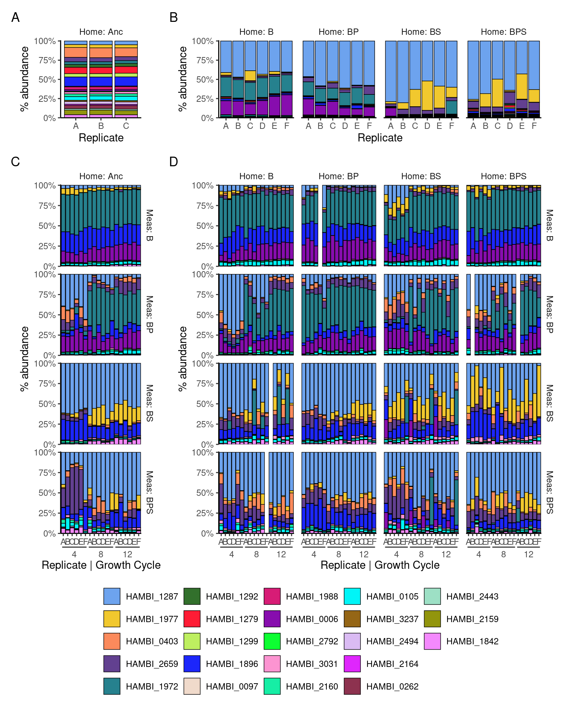
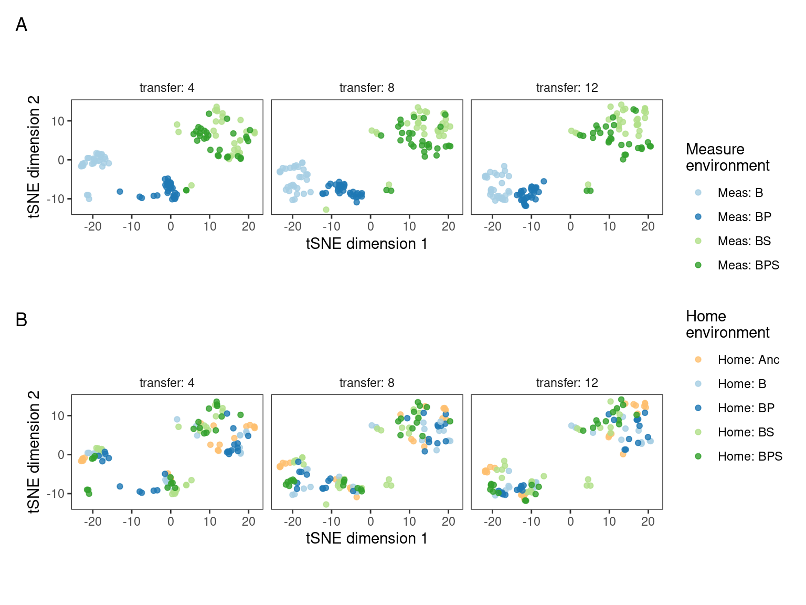
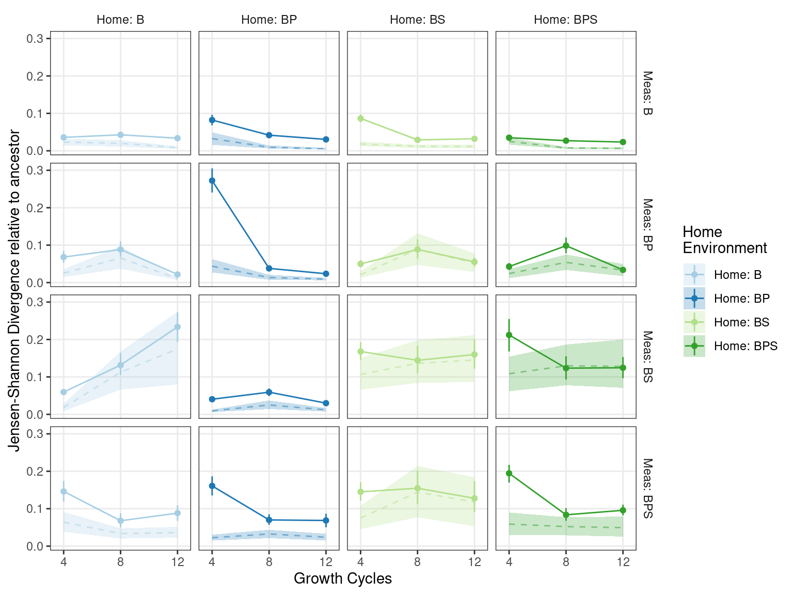

Community composition analysis
1 Setup
1.1 Libraries and global variables
1.2 Required directories
1.3 Read and format 16S amplicon data
sptable <- readr::read_tsv(here::here(data, "species_counts_md.tsv")) %>%
dplyr::mutate(transfer = day/7)
counts_f <- sptable %>%
dplyr::group_by(sample) %>%
dplyr::mutate(f=count_correct/sum(count_correct)) %>%
dplyr::ungroup() %>%
dplyr::mutate(measure_env_short = dplyr::case_when(measure_env == "bact" ~ "Meas: B",
measure_env == "bact_pred" ~ "Meas: BP",
measure_env == "bact_strep" ~ "Meas: BS",
measure_env == "bact_pred_strep" ~ "Meas: BPS")) %>%
dplyr::mutate(home_env_short = dplyr::case_when(evolution_env == "anc" ~ "Home: Anc",
evolution_env == "bact" ~ "Home: B",
evolution_env == "bact_pred" ~ "Home: BP",
evolution_env == "bact_strep" ~ "Home: BS",
evolution_env == "bact_pred_strep" ~ "Home: BPS")) %>%
dplyr::mutate(measure_env_short = factor(measure_env_short, levels = c("Meas: B", "Meas: BP", "Meas: BS", "Meas: BPS")),
home_env_short = factor(home_env_short, levels = c("Home: Anc", "Home: B", "Home: BP", "Home: BS", "Home: BPS")),
day = factor(day),
replicate = factor(replicate),
strainID = factor(strainID, levels = names(hambi_colors)))1.4 Tidying
# these are communities of a (supposedly) known composition. Can be used with metacal
pos_ctrl_samples <- counts_f %>%
dplyr::filter(str_detect(sample, "pos_ctrl"))
# these are samples taken directly from YSK and represent the composition of the communities used to start the experiment
t0_samples <- counts_f %>%
dplyr::filter(!str_detect(sample, "pos_ctrl")) %>%
dplyr::filter(day == 0)
# only samples from the experiment
counts_f_experiment <- dplyr::anti_join(counts_f, pos_ctrl_samples) %>%
dplyr::anti_join(., t0_samples) %>%
dplyr::mutate(measure_env_short = factor(measure_env_short, levels = c("Meas: B", "Meas: BP", "Meas: BS", "Meas: BPS")),
home_env_short = factor(home_env_short, levels = c("Home: Anc", "Home: B", "Home: BP", "Home: BS", "Home: BPS")),
day = factor(day),
replicate = factor(replicate),
strainID = factor(strainID, levels = names(hambi_colors)))2 Visualize Community composition
# Base function for making the subplots
basebar <- function(.data, x = x, xlab = xlab, xgrid = NULL){
ggplot2::ggplot(.data) +
ggplot2::geom_bar(aes(y = f, x = {{ x }}, fill = strainID), color="black", linewidth=0.25, stat="identity") +
ggplot2::labs(x = xlab, y="% abundance", fill="") +
ggplot2::scale_fill_manual(values = hambi_colors) +
ggplot2::scale_y_continuous(limits = c(0,1.01), expand = c(0, 0), labels = percent) +
ggplot2::scale_x_discrete(guide = ggh4x::guide_axis_nested()) +
ggplot2::theme_bw() +
mybartheme()
}
A <- t0_samples %>%
dplyr::filter(evolution_env == "anc") %>%
basebar(x = replicate, xlab = "Replicate") +
ggplot2::facet_grid( ~ home_env_short)
B <- t0_samples %>%
dplyr::filter(evolution_env != "anc") %>%
basebar(x = replicate, xlab = "Replicate") +
ggplot2::facet_grid( ~ home_env_short)
C <- counts_f_experiment %>%
dplyr::filter(evolution_env == "anc") %>%
basebar(x = interaction(replicate, transfer), xlab = "Replicate | Growth Cycle") +
ggplot2::facet_grid(measure_env_short ~ home_env_short)
D <- counts_f_experiment %>%
dplyr::filter(evolution_env != "anc") %>%
basebar(x = interaction(replicate, transfer), xlab = "Replicate | Growth Cycle") +
ggplot2::facet_grid(measure_env_short ~ home_env_short)layout <- "
ABBBB
CDDDD
"
pbar <- A + B + C + D +
patchwork::plot_layout(guides = 'collect', heights = c(0.2, 0.9),
design = layout) +
patchwork::plot_annotation(tag_levels = 'A') &
ggplot2::theme(legend.position='bottom')
ggplot2::ggsave(
here::here("figs", "community_composition_bar_plot.svg"),
pbar,
width = 8,
height = 10,
units = "in",
device = "svg"
)Warning: The S3 guide system was deprecated in ggplot2 3.5.0.
ℹ It has been replaced by a ggproto system that can be extended.
3 tSNE dimension reduction of community composition
counts_f_experiment %>%
dplyr::group_by(strainID) %>%
dplyr::summarize(n_samples = n(),
n_gt0 = sum(count > 0),
p_gt0 = n_gt0 / n_samples) %>%
dplyr::ungroup() %>%
dplyr::arrange(n_gt0)Here we will use the centered log-ratio transformation for the species abundances. The centered log-ratio can be interpreted as the log-fold change of species i relative to the average microbe in a sample. The formula for the transformation is:
\[ \text{clr}(\mathbf x)= \left(log \frac{x_i}{g(\mathbf x)} \right)_{i=1,...,D} \qquad \text{with} \quad g(\mathbf x) = \left(\prod_{i=1}^Dx_i\right)^{1/D} = \exp\left(\frac{1}{D}\sum_{i=1}^D \log x_i\right)\text{,} \tag{1}\]
We will use the implementation of centered log-ratio transform in the compositions package
set.seed(234781)
lowstrainsv <- c(
"HAMBI_0097",
"HAMBI_2792"
)
mymat <- counts_f_experiment %>%
dplyr::filter(strainID %nin% lowstrainsv) %>%
dplyr::select(sample, strainID, count) %>%
dplyr::mutate(count = count + 1) %>%
# important to arrange by sample as this makes some later joins easier
dplyr::arrange(sample) %>%
tidyr::pivot_wider(names_from = "strainID", values_from = "count") %>%
tibble::column_to_rownames(var = "sample") %>%
data.frame()
# calculate clr
balclr <- compositions::clr(mymat)
# tsne
mymat_tsne <- Rtsne::Rtsne(as.matrix(balclr), perplexity = 30, dims = 2)# plotting function
ptsne <- function(tsne_obj, variable, colors){
data.frame(tsne_obj$Y) %>%
cbind(dplyr::distinct(dplyr::select(counts_f_experiment, sample, replicate, transfer, measure_env_short, home_env_short))) %>%
ggplot2::ggplot() +
ggplot2::geom_point(aes(x= X2, y = X1, color = {{ variable }}), alpha = 0.8) +
ggplot2::scale_y_continuous(breaks = c(10, 0, -10)) +
ggplot2::coord_fixed() +
ggplot2::labs(x = "tSNE dimension 1",
y = "tSNE dimension 2",
shape = "Transfer") +
ggplot2::scale_color_manual(values = colors) +
ggplot2::facet_grid(~transfer, labeller = label_both) +
ggplot2::theme_bw() +
ggplot2::theme(
panel.grid.major = element_blank(),
panel.grid.minor = element_blank(),
panel.background = element_blank(),
strip.placement = 'outside',
strip.background = element_blank(),
)
}Make the patchwork layout
pm <- ptsne(mymat_tsne, measure_env_short, c("#a6cee3", "#1f78b4", "#b2df8a", "#33a02c")) +
ggplot2::labs(color = "Measure\nenvironment")
ph <- ptsne(mymat_tsne, home_env_short, c("#fdbf6f", "#a6cee3", "#1f78b4", "#b2df8a", "#33a02c")) +
ggplot2::labs(color = "Home\nenvironment")
pt <- pm + ph +
patchwork::plot_layout(guides = 'collect', nrow = 2) +
patchwork::plot_annotation(tag_levels = 'A')
ggplot2::ggsave(
here::here("figs", "community_composition_bar_tsne.svg"),
pt,
width = 8,
height = 6,
units = "in",
device = "svg"
)
ggplot2::ggsave(
here::here("figs", "community_composition_tsne.png"),
pt,
width = 8,
height = 6,
units = "in",
device = "png"
)plot the figure

4 Distances between communities
The Jensen–Shannon divergence (JSD) is a symmetrized and smoothed version of the Kullback–Leibler divergence. It is defined as:
\[ D_{\text{JS}}(P \parallel Q) = \frac{1}{2} D_{\text{KL}}(P \parallel M) + \frac{1}{2} D_{\text{KL}}(Q \parallel M) \tag{2}\]
\[ M = \frac{1}{2}(P + Q) \tag{3}\]
Here, (\(D\_{\text{KL}}\)) denotes the Kullback-Leibler divergence which is defined as:
\[ D_{KL}(P \parallel Q) = \sum_{x \in \mathcal{X}} P(x) \log \frac{P(x)}{Q(x)} \tag{4}\]
# create a matrix of species frequencies
prob_mat <- counts_f_experiment %>%
dplyr::select(sample, strainID, f) %>%
tidyr::pivot_wider(names_from = strainID, values_from = f) %>%
tibble::column_to_rownames(var = "sample") %>%
as.matrix()
# calculate JSD between all pairs using philentropy::JSD
jsd_mat <- philentropy::JSD(prob_mat)Metric: 'jensen-shannon' using unit: 'log2'; comparing: 355 vectors.# get nonredundant pairings
ind <- which(upper.tri(jsd_mat, diag = TRUE), arr.ind = TRUE)
nn <- list(rownames(prob_mat), rownames(prob_mat))
jsddf <- data.frame(sample.x = nn[[1]][ind[, 1]],
sample.y = nn[[2]][ind[, 2]],
jsd = jsd_mat[ind])
# metadata for joining
md <- dplyr::distinct(counts_f_experiment, sample, replicate, transfer, measure_env_short, home_env_short)
# convert to long format
jsddf_long_md <- jsddf %>%
dplyr::left_join(md, by = join_by(sample.x==sample)) %>%
dplyr::left_join(md, by = join_by(sample.y==sample))# filter JSD pairs to only those that are relative to ancestral community in each measurement environment
# also calculate mean and boostrapped 95CI
jsddf_long_md_filt <- jsddf_long_md %>%
dplyr::filter(measure_env_short.x == measure_env_short.y) %>%
dplyr::filter(home_env_short.x != home_env_short.y & transfer.x == transfer.y & home_env_short.x == "Home: Anc") %>%
dplyr::summarize(ggplot2::mean_cl_boot(jsd), .by=c(transfer.y, home_env_short.y, measure_env_short.y)) %>%
dplyr::mutate(home_env_short.y = factor(home_env_short.y))# not sure what exactly this is telling, but I am calculating the within home/measurement divergence
# as some kind of variability baseline.
intrarepvar <- jsddf_long_md %>%
dplyr::filter(measure_env_short.x == measure_env_short.y & home_env_short.x == home_env_short.y & transfer.x == transfer.y) %>%
dplyr::summarize(ggplot2::mean_cl_boot(jsd), .by=c(transfer.y, home_env_short.y, measure_env_short.y)) %>%
dplyr::filter(home_env_short.y != "Home: Anc") %>%
dplyr::mutate(home_env_short.y = factor(home_env_short.y))mycols <- c("Home: B" = "#a6cee3", "Home: BP" = "#1f78b4", "Home: BS" = "#b2df8a", "Home: BPS" = "#33a02c")
pjsd <- ggplot2::ggplot() +
ggplot2::geom_ribbon(data = intrarepvar,
aes(x = transfer.y, ymin = ymin, ymax=ymax, fill = home_env_short.y), alpha=0.25) +
ggplot2::geom_line(data = intrarepvar,
aes(x = transfer.y, y=y, color = home_env_short.y), alpha=0.5, lty=2) +
ggplot2::geom_point(data = jsddf_long_md_filt, aes(x = transfer.y, y = y, group = home_env_short.y, color = home_env_short.y)) +
ggplot2::geom_linerange(data = jsddf_long_md_filt,
aes(x = transfer.y, ymin = ymin, ymax = ymax, color = home_env_short.y)) +
ggplot2::geom_line(data= jsddf_long_md_filt,
aes(x = transfer.y, y = y, group = home_env_short.y, color = home_env_short.y)) +
ggplot2::facet_grid(measure_env_short.y ~ home_env_short.y) + #, scales = "free_y"
ggplot2::labs(x = "Growth Cycles", y = "Jensen-Shannon Divergence relative to ancestor", color = "Home\nEnvironment", fill = "Home\nEnvironment") +
#ggplot2::scale_y_sqrt() +
ggplot2::scale_x_continuous(breaks = c(4, 8, 12), limits = c(3.5, 12.5)) +
ggplot2::scale_color_manual(values=mycols) +
ggplot2::scale_fill_manual(values=mycols) +
ggplot2::theme_bw() +
ggplot2::theme(
#panel.grid.major = element_blank(),
panel.grid.minor = element_blank(),
panel.background = element_blank(),
strip.placement = 'outside',
strip.background = element_blank(),
)
ggplot2::ggsave(
here::here("figs", "community_jsd_to_anc.svg"),
pjsd,
width = 8,
height = 6,
units = "in",
device = "svg"
)
ggplot2::ggsave(
here::here("figs", "community_jsd_to_anc.png"),
pjsd,
width = 8,
height = 6,
units = "in",
device = "png"
)